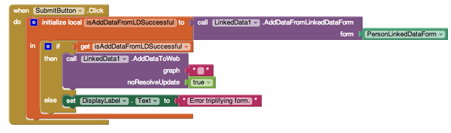
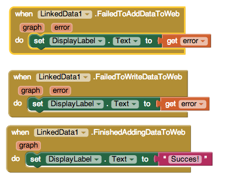
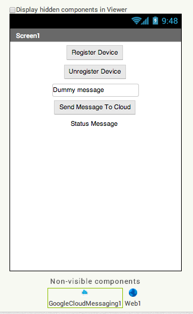
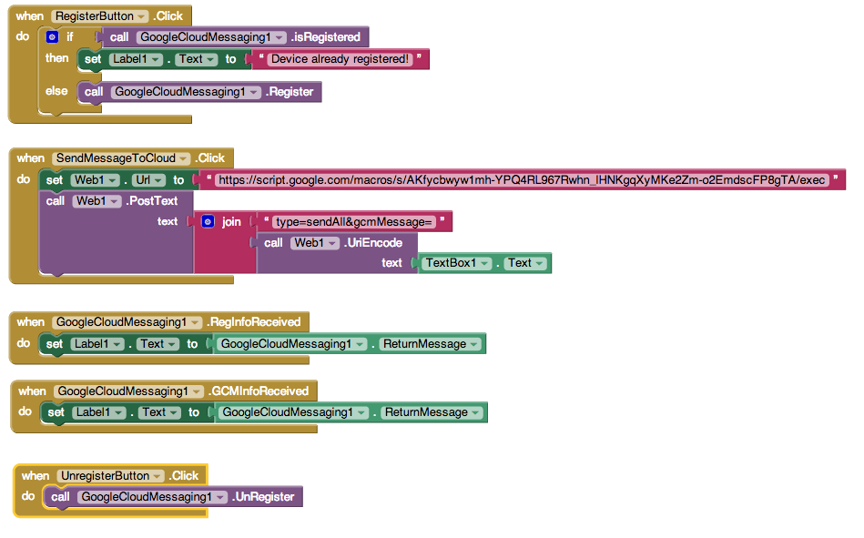
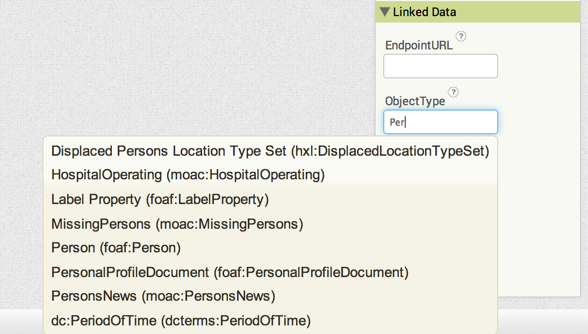

Welcome to Punya! We have extended the MIT App Inventor framework to enable rapid mobile application development in the humanitarian domain using Linked Data Technologies. If you are new to App Inventor, we suggest you try out the App Inventor tutorials before trying out the tutorials listed here. We also urge you to get some familiarity with linked data concepts. Linkeddata.org has listed some guides and tutorials you can check out.
You can try out the example apps in this tutorial at http://punya.appinventor.mit.edu. If you are a reviewer or a reader of our ISWC 2017 Resource Track paper, you may login with the following credentials to try out the apps described in our paper.
The video below summarizes many of the functionalities of the Punya framework.
For many of the tutorials listed below we have included the AIA file (the App Inventor source file) that you can try out on our App Inventor Punya instance at http://punya.appinventor.mit.edu (try out our test instance), and the APK file that you can try out on your phone. We also included a screenshot of the blocked used in constructing the app.
In this screencast we will show you how to query DBPedia and obtain the raw results. We use the LinkedData component, and a Label to display the results.
The query used in this app is
PREFIX dbo: <http://dbpedia.org/ontology/>
PREFIX geo: <http://www.w3.org/2003/01/geo/wgs84_pos#>
SELECT * WHERE {
?snippet a dbo:Place;
geo:lat ?lat;
geo:long ?lng.
FILTER (?lat > 42 - 1 && ?lat < 42 + 1 &&
?lng > -71 -1 && ?lng < -71 + 1)
}
LIMIT 100
We have introduced the Linked Data List Picker that is able to query a remote endpoint for entities and populate them in the list picker instance. This enables the mobile application user to pick from a dynamic list of values that are obtained from querying a remote dataset rather than being limited to a set of static values. For example, assume you want to list all the currently available different disaster types that can be obtained by running the following SPARQL query at run-time:
PREFIX skos: <http://www.w3.org/2004/02/skos/core#>
SELECT ?category ?label
WHERE {
?category a skos:Concept ;
rdfs:label ?label ;
skos:broader <http://dbpedia.org/resource/Category:Natural_disasters> }
In order to support this, the application developer has to specify three things:
http://dbpedia.org/sparql (this can be any other location the query can be executed at)http://www.w3.org/2004/02/skos/core#broaderhttp://dbpedia.org/resource/Category:Natural_disastersThe Linked Data Form is an App Inventor layout component that can be used by developers to identify a collection of fields that should be applied to a particular ontological concept. For example, you may want to construct a form to obtain a person's name, school and the location.
The properties of the person can be conceptually represented as shown in this picture. Note 'Location' has its own properties.
A "Person" consists of three triples:
Person --Name--> "Alice"
Person --School--> "MIT
Person --Location--> Location_Object
Similarly, the "Location_Object" consists of two triples:
Location_Object --Latitude--> "42.36"
Location_Object --Longitude--> "-71.09"
The two different sets of triples can be grouped into two LinkedDataForms. The Location LinkedDataForm is a nested form. The properties such as "Name", "School", "Latitude" and "Longitude" can be represented using texboxes within the respective forms.
You have now created a Linked Data using Punya components!
When using the the LinkedDataForm, it has to be used in conjunction with the LinkedDataForm. To "convert" the data represented in the form in to a LinkedData format, first call the AddDataFromLinkedDataForm method in the LinkedData component. This will create a model of the data in the LinkedData component.
If the conversion worked, you can call the WriteDataToLocal method in LinkedData component. Please note the path you have to give should be an absolute path. If you use /sdcard/data.ttl, the data file will be created at the root of your mobile phone's file system.
If the file was successfully written to the phone, you may read it using another LinkedData component. We have used LinkedData2 for this purpose.
Please note, if you use /sdcard/data.ttl path, make sure you have an SD card in your phone and that you have given the app permission to use it.
Often times you need to store the data produced in a form in a remote endpoint. The punya framework allows you to do that with a SPARQL 1.1 endpoint of your choice. In this example, we have used Dydra. You too can request an account from the Dydra team to store the data produced in your forms, or setup your own SPARQL updateable endpoint.
Just as in Tutorial 5, you need to call AddDataFromLinkedDataForm on the LinkedData component. If the form triplifies correctly, call the AddDataToWeb method. If the triples are added to the default graph in the endpoint just add an empty string as shown in the figure below. If you are adding these triples into a specific "named" graph, add the URI of that graph there.
You might also want to add some error handling blocks as follows.
In the Designer View, you want to give the correct endpoint URL for the LinkedData component. This will probably look something like:
http://5YvZSkM9MDyggix8zvh0@dydra.com/oshanis/test-api/sparql
On App Inventor, we have included the following UI components, as well as the non-visible GoogleCloudMessaging and the Web components.
The designer view of appears as follows:
The blocks for the program logic is as follows. This includes behavior to register the device if it has not been registered already, send a message to the Google App Script Server, and receive messages from the Google App Script Server.
In the GoogleCloudMessaging component make sure to input your Google App Scripts Server URL.
In order to handle the device registration and unresgistration, the doPost function in the serverMain.gs will include the following code snippet.
if(eventInfo.parameter.regId) {
var reg = db.query({regId : eventInfo.parameter.regId}).next();
if(reg && eventInfo.parameter.type === 'unregister'){
db.remove(reg);
Logger.log("Removed the given registration id.");
}
else if(!reg && eventInfo.parameter.type === 'register'){
db.save(eventInfo.parameter);
Logger.log("Registered the given registration id.");
sendGCM2One(eventInfo.parameter.regId, 'Ping from server!');
}
}
After you register the device, you should see a registration successfully on the app, and if you type "{}" into your GCM Server page, you should see a new registration entry from your device.
Similarly, there is corresponding code to handle the "sendAll" type in the Google App Script Server.
if(eventInfo.parameter.type === 'sendAll'){
sendGCM2All(eventInfo.parameter.gcmMessage);
}
App Inventor's Designer View provides ontology auto-completion to application developers and is currently based on dynamically loaded ontologies that include FOAF (Friend of a Friend), MOAC (Management of a Crisis), and HXL (Humanitarian eXchange Language).
The screenshot below shows some of the auto-generated suggestions for one of the linked data properties of the Linked Data Form component. You have to input the first letter or two of the concept you are interested in adding for that property. You can then either choose from one of the entries or add your own property value if the concept you were looking for is not listed. Note that what is displayed in the auto-completion are the rdf:labels of the respective concepts. However, when inputting a custom concept, you have to give the URI of the concept.
You need to include the Google Maps API key in your App Inventor Project and give the SHA1 of your app in the Google Apps Console Android Key.
In Android, the SHA1 serves as the identifier for the app. This is required by Google if you want to publish the your created app to the Google Play Store.
App Inventor has the default the package name and the class name, so you can’t change them.
The default format is the following
appinventor.ai_[gmail account name, exclude the “@gmail.com”].[app name]
Here are the steps you need to follow:
[SHA1];appinventor.ai_[gmail account name, exclude the “@gmail.com”].[app name].You need to set up a Web Service using the Google App Script Server to send and received messages to mobile phones.
We assume that you have basic JavaScript programming skills. Please refer to Google App Script Server documentation, and the Google Cloud Messaging documentation. Specifically, make sure you understand how to deploy a service.
We have shared a simple Google App Script. Please make a copy of that in your own Google Drive. You can tinker that script to deploy your own service.
The doPost(e) function in serverMain.gs captures HTTP Post messages from the phones and other services such as CSPARQL Engine. We have pre-defined several HTTP Post parameters and provided the logic to handle them. Please take a look at the following parameters:
type: can take values subscribe (for a query subscription), sendAll (to send a message to all the devices registered with GCM) regID: when registering a device with GCMcontents: the results from a CSPARQL query executionUsing the Google App Script server in conjunction with CSPARQL:
serverConstants.gs:
SERVER_URL: URL of the CSPARQL engine if you are running your own instanceGCM_Server_URL: URL of the deployed scriptdoPost function should recieve the HTTP Post parameter type with value subscribeUUID needs to be created to uniquely identify the query results targetted for the respective devicelinkedDataMain.gs lists some of the pre-packaged queries as well as helper functionsDebugging: if you are testing database inserts or anything that does not require the receipt of an HTTP Post request, you may use Run -> [name of function], and check for any output at View -> Log. To debug functions that are dependant on HTTP Post requests, please follow this procedure:
LOGGING_SPREADSHEET_ID in serverConstants.gs.MyLog function in serverMain.gs implements the logging functionality.MyLog(functionName, tag, msg)MyLog will significantly slow down your app. So, make sure to comment out or remove MyLog calls in a production settings.Often times we will need to upload images to the web, to be later consumed by other users. In order to provide an easy and quick way for App Inventor users, we have enhanced an existing component to store and retrieve pictures from the web. These pictures will not be available to the public. The following tutorial will cover common steps required to store and retrieve a picture from the web: